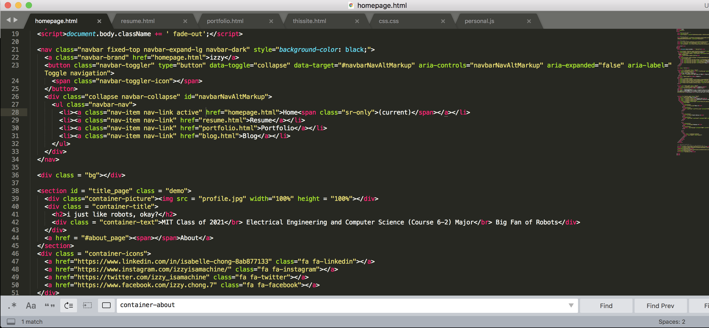

This website was built as a way to compile information about both my previous projects and current work in one place. After completing the UI portion of the CREDC project, I decided to apply the HTML/CSS/Javascript skills I had learned to a personal application.
Originally, I planned to use a template to design this site. However, in the interest of further personalizing my website, I decided to build my website, both the desktop and mobile versions, without a pre-built theme, but still using the Bootstrap framework. Since I was still relatively new to HTML/CSS/Javascript when I began this project, it has also acted as a learning project for me on how to lay out and format web content and publish sites.
As I learn more and more about website development, the next steps for this project would be to build in a more substantial back end and more complex animation content for the front end. This site will continue to be a side project of mine and a work in progress and I expect its change over the years to be a document of my progress improving my web development skills.
These are the resources that I used to help build this site. Scroll Button (Design #5) Fade Effect (For Transitions) W3 Schools and WebDev Reddit (For Various References)